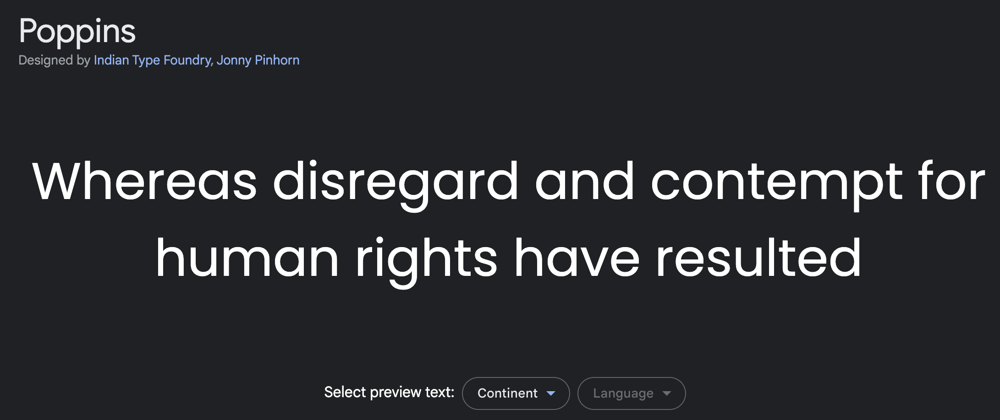
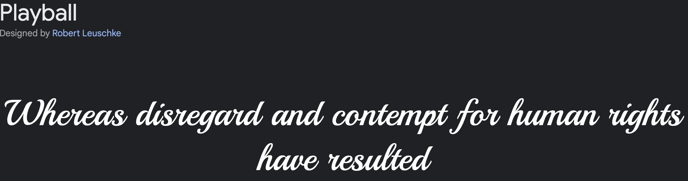

General Information
This branded website is publicly available at https://homely-github-io.github.io/Homely-Official/index.html
This website was created by…
- Faye Alkhamisi (ID: 202887)
- Björn de Vries (ID: 203488)
- Natalia Gancheva (ID: 210563)
- Jedda Scheepers (ID: 214887)
Content
Please clarify here the match between students and pieces of content. Make sure that you provide a link to the correct page within the website. For more information regarding to Conten, please refer to Appendix #1.
| # | Student ID | Value | Name and link of content |
|---|---|---|---|
| 1. | 202887 | Bringing Home to You | Link to Card |
| 2. | 203488 | Creating a Warm and Welcoming Space | Link to Card |
| 3. | 210563 | Transport People Back to Good Memories | Link to Card |
| 4. | 214887 | Be Home-Healthy | Link to Card |
Production
The purpose of the Homely website is to give insights for customers on brands identity. Within the website, the user can learn about the company's values, vision and the team behind it. What is more, the website is also functioning as a webstore where customers could easily purchase the candle of their likings just in few simple clicks. By combining both informative and purchasing function of the website, we are keeping it simple and easily accessible for the client to navigate through our platforms, get to know us better as a company and make a purchase all at one place, just a few clicks apart.
Design Elements
Design elements and their justifications:
-
Homely colour scheme:
- #ABC4AB and #727D71 Green is a color that represents new beginnings and growth, therefore we have chosen it as a part of our color scheme as our product is for those who took a step towards the change, setting a start to their new beginning abroad. What is more, after conducting solution interviewes with our target audience, a majority of them have mentioned that when they think of their home country, the first thing that pops up in their minds is the nature, therefore it is the first color they associate with a memory from back home.
- #A39171 and #6D4C3D Brown colors represent security and safety. We have chosen those colors because our brand is creating a save space for expats that reminds them of home.
- #DCC9B6 The vanilla color is a homely color that is mostly used within the home interior industry. It is not only because of design choices, vanilla is the aroma that is the strongest smell we all remember.
- Font choices: The font used for the website will be “Poppins”, due to it being very neutral and neat-looking. We chose to go with this font because we wanted something that would not be overwhelming to the eye of the viewer and also easily legible. Along with tha, we have decided to have a contrasting font which is only going to be used for main titles and the Homely logo. The font "Playball" is imitating a handwriting. With including that, we encorporate the homely feeling and the shortening the disctance between us and the consumer as it feels more personalized, just like our candles.  
- User interface patterns: The Homely website uses simple interface patterns because our style choice was to stay "minimalistic" in order to create a relaxing and calm environment without overwhelming our clients with too much details. On the very top of the page we have a navigation bar in which every page is given an appropriate title so it makes the navigation throughout the website be easy and all our product and information be accessible. By having the navigation bar on top, we make it easily navigatable throughout the website. It is error resistant, in case a user makes a wrong click, they could easily find their way back by clicking on the button they want whitin the navigation bar or just click the "go back arrow" on their web browser. Our values are presented in cards for the user to be able to easily meet who we are as a company, rather than searching for the different values spread around the website. We have chosen cards for the shopping as well, because this way we can put our top candles that could be purchased immediately. We are also using carousel to put different information about the brand and us at the same place using graphics and links in case someone had a hard time using our navigation bar.
- The structure of the navigation and content: In terms of navigation, content is spread equally throughout the webpage. We made sure not to have too much content on the pages so it is not overwhelming for the viewer. As we aim for simplistic and relaxing mood, we have made sure to destribute the content accordingly. The title of each page is easily understandable of what the content within is about. We keep it as simple as possible by having a navigation bar on top with all the pages that are accesibe on our website. If user wants to go back to previous page they have been a, they simply can press the "go back arrow" at their web browser or just choose to which page they want to be sent by clicking it in the navigation bar.
- These elements were related to the following:
- The fit of the web design regarding our values and brand personality - Based on our values, Homely provides a save space, reminding expats of their own home and help them deal with homesickness. By working with the colors, we insure we represent our values not only verbaly but also visually. By staying minimalistic and clean with its structure, we also give our customers the home feeling of tidiness just like the comfort of their own home.
- The fit of the web design regarding our marketing and communication strategy - With our marketing and communicaton strategy, we have created pages on two platforms - Facebook and Instagram. On those page, the website was promoted as well as within the website you can also find links to them. On social media as well as the website, users can find more insights on who we are as a company and what we stand for. Moreover, users can see our promotions of the products on a Instagram story or a post with a link to buy them directly from the website. Another aspect is that on both platforms we use the same colors and fonts that represent the brand. That way we can ensure that the customer remembers us visually and they will later on start recognizin us and start telling us appart from other brands.
- The fit of the web design regarding our unique value proposal of the product- On the website regarding visuals we have aimed for smokey, pastel colored gradiants. This is representing the calmness and comfort we would like our costumers to get through our product. But before they purchase it, we would like to create a space for them on the website that they can feel our special touch to those normal candles at first glance. The colors, simplisity and the gradiant combined are stating visualy our uniqueness of the product. By having our slogan on most pictures, we do remind our customers that this is not just a candl, but there is a story behind it. Therefore, on the "Shop now" page, each candle is presented by its story rather than just the smell it is emmiting. That way we communicate our message to the customer that this is not just an ordinary aroma candle, it is a strory wrapped in a glass conainer which is just waiting for the spark to elighten it and take you to the place you have dreamed going back to.
Credits
Please provide links and/or credits for third-party elements including:
- The source code for UX patterns other than the ones provided by the “Bootstrap” library (see getbootstrap.com/docs for a list of such patterns)
- Images: that were not produced by students themselves, including when crediting is not mandatory (in other words, we ask you to credit Unsplash images)
- Photo by Vlada Karpovich: https://www.pexels.com/photo/lit-candles-and-dried-leaves-on-the-table-9969178/
- Photo by Juan Pablo Serrano Arenas: https://www.pexels.com/photo/blurry-image-of-a-brownish-background-1242348/
- Photo by Sasha Kim: https://www.pexels.com/photo/amber-candle-on-adn-open-book-8484055/
- Photo by Vlada Karpovich: https://www.pexels.com/photo/brown-vase-and-candles-9969156/
- Photo by Karolina Grabowska: https://www.pexels.com/photo/candles-on-white-table-6794095/
- Photo by Kathleen McInnis: https://www.pexels.com/photo/candles-on-wooden-board-10759196/
Testing Report
Please write about…
- Our testing goals:
- First of all, we want to know whether our site is easily manageable. Can users find their way through it, and achieve the goal they have set for themselves? These things depend on the set up of the website, and whether all the necessary information can be found for a user to see.
- Next to that, we would like to know whether there are any errors or bugs in the code and whether our users have any suggestions as to how our website can be more user friendly.
- Another thing we would like to know is whether there are any design mistakes or improvements that can be made. We, of course, want our website to work, but it also has to be visually pleasing and able to retain a user’s attention.
- Our testing methods:
- The test’s participants (number, match with target audience, etc.) - We have decided to conduct our usability testing with four different people. All of these people are matches with our target audience, meaning they're females between the ages of 25 and 35.
- The test’s setting (which material is used, is it done remotely, on campus, at home, etc.) - The material that is used is our website, which our participants will see through a laptop view. The usability testing is preferably conducted on campus and in person, however, if this is not possible, the testing will be conducted online. In the latter case it will be recorded through screenrecording, and the participant will be sharing their screen. If done on campus, it will be video recorded on a phone.
- The test’s protocol (what instructions are given, how it is recorded, etc.) - The participants will be given several different tasks for them to complete and will be asked to voice their opinions out loud, and walk us through their thinking process. If the testing is online, it will be recorded through screenrecording, and the participant will be sharing their screen. If done on campus, it will be video recorded on a phone.
- Testing results
- Users were able to reach the goal we have set. Non of the users had trouble navigating through our website. This would have ment that users get lost searching for content, not being able to find what they are searching for, or they had trouble going back to ther start position. Out of the usability testig results we can conclude that our use of a navigation bar made it easy for them to navigate throughout our website. The using of cards was also positive as it gives more structure to the content within the website giving the simplistic feeling. The website is still not fully functional as users were trying to put products to "cart". This is an element that would frustrait users in case they already want to make a purchase.
- Future improvements would be making the website fully functional by adding a page where users could fully customize their candle of choice. Another element that has to be added is a shopping cart on the upper right corner, so whenever a user makes a purchase they can easily find it there and change/cancel. What is more, all buttons within the website should be functional, as for example the "add to cart" which is now not responding as we do not have the shopping cart element.
Marketing - check Appendix #2
Context of campaign and promotional activities
Going abroad is already a huge step a person can make. Our brand ‘’HOMELY’’ is about easing the feelings of nostalgia for expats who want to be taken back to those great memories using the sense of smell. Senses are a crucial thing as they are our link to the world around us (Stre, n.d.) We are striving towards creating a warm feeling for those who were brave enough to make a change and help them feel at home, even it is miles away. By enlightening the spark of the candle, our customers will be transferred back to good old memories. With this we will create a personal experience where our customer will feel at home and satisfied by the experience we are providing. Based on previous research conducted, the team has decided to have the target group as expats women aged 25-35. The target group was chosen after research showed that women between 25-35 are most likely to make such purchase compared to men. However, occupation does not have an influence on this decision, so we have decided to focus on both workers and students as long as they fit the target age.
In order to achieve this, we had to execute a marketing campaign. The steps we as a team took were researching into platforms to use and post that would be effective. Team Homely has gone for posting actively on Facebook and Instagram. More about the promotional activities you can find in the Appendix 1 (Content calendar.)
Target Audience
The target audience for the brand is expats, whether they’re workers or students, ages 20 to 45. The candle that we created however, is for women ages 25-35. Over 95% of women buy candles which is why we chose this target audience (WaxMelters, n.d.). Studies have shown that women purchase candles by the fragrance of it since they find this the most important characteristic. This, without a doubt, connects and relates it back to our product. Women love candles as they give warmth, nostalgia and imagination (Why Women Love Scented Candles - Crystal Candles | Crystal Candles, n.d.). They associate them with love, memories and most importantly, home. Though we focus on women, both men and women seem to appreciate a candle as a gift. Additionally, a study by Bustle showed that 81% of female millennials stated that social media was the best way for brands to reach them (N, 2022).
Objectives
Reach Objective: With our communication and media plan, we would like to reach 100 female expats, aged between 25 and 35, and are currently residing in the Netherlands, before April 14th, 2023.
Affect Objective: Our target audience are studying or working middle-aged female expats living in the Netherlands. With our communication and media campaign, we would like to make their time abroad a bit easier by easing their homesickness. To measure that we would measure the numbers of reshares of our Instagram stories. Before April 14th, 2023, we would like to have at least 5 reshares of our Instagram story.
Response Objective: We hope to achieve that our target audience will interact with both our website and social media pages; Instagram and Facebook. Before April 14th, 2023, we would like to have 25 responds and likes to our social media posts.
Learning Points
One main learning point was that Instagram post weren’t blowing up as much as we thought and hoped they would mainly because of our inactivity. On the first post we got around 3 to 4 likes while we expected more than 20 likes as a minimum. We noticed as well that posting stories worked better as the stories where we posted different polls and where our followers could fill in their own interests, were doing way better. We got more interaction through the stories, than we even got likes on our posts.
Additionally, we noticed that posting regularly worked to increase our reach and follower’s base. The more we posted the more followers we got. Eventually people even started to respond to our posts. Here we could also see what our followers where thinking. We could now also interact more with our customers by responding to their comments. We could also see that this was appreciated because they gave our comments likes. This was effective for other followers to see that we were interactive. For this creates a relation between the brand and the costumers. This will also give an indication for other people that stumble upon our page that we are trustable because of our communication. In conclusion, the second learning point is that interaction matters immensely.
According to our media posts planning, we discovered that we could perhaps post more regularly. We initially were planning on posting two times a week. We noticed that the more we posted, the bigger the account grew. We too noticed that if we matched stories with our posts, it created a bigger reach. People could for example see our story on top of their Instagram and click on it. This caused them to become curious about the post and went onto our Instagram where they saw our posts. This means that they spend longer watching our content and have more time to think about our brand which creates more awareness.
Future Planning
If we reflect on the values and the vision of the brand where we started with, we have the feeling this was an adequate direction to follow. People liked the message and could relate with what we were trying to tell them. To have a more critical look on the message of our brand, is that we could show our message through the execution of content in a better way. We could’ve put more text in our content that had a better relation to our values. We feel like we missed a few points in that part of our communication and media plan.
We started with making a bio where our message was stated. We feel like this was a good step to take because it gave our page visitors a direct idea of what HOMELY is about. Also, with the logo we had as our profile picture we could give our potential customers a feeling of our brand. We think we would do this the same in the future. Then we created our first posts to create awareness. These posts included our logo and our brand quote: ‘’for those who wish to turn back in time.’’ We also think this a good way to introduce our brand and create awareness. However, we could have done more such as explaining our brand in the captions of the posts which we didn’t. We think this would give our page visitors a much better idea about our brand and a reason to follow. We could also see that what we did didn’t gain a lot of likes according to the statistics. The First awareness post only gained 7 likes.
After that we created a count-down post. You could see in this post that there were 4 days left until the big reveal and there was a funny fact included in the caption about scent. If we look back at it now, we think our countdown post was a bit too fast. We could’ve posted more general information about our brand in between. We think that with the early count-down post people still didn’t really knew what to expect. On our stories we believe that we did a solid job on them. We posted several stories where people could answer polls in relation to our brand and content. We made people more aware and understanding about our brand with these posts, which we could see back in the statistics. People answered way more on the stories than on the Instagram page posts. With people that were responding we also got more ideas we could do with our brand, and we got an insight in what people like. So, stories were a great way to interact with potential customers. According to our statistics people gave answers like scents they would like to see in the future. For example, sunscreen, forrest.
One of our last posts was our product reveal. In this post we first showed a picture of raspberries. We made use of a ‘’swipe post’’. This is where you could put two or more pictures in one post. The second picture in the post was a demo of our product. We made this with illustrator because we did not have a real-life product we could show. In the caption we put a little story about the scent and what memories it can give you. We think this was a great way to show our product via illustrator because with this we could give our potential customers a visual product without having a real-life product. Our last post was a reel of Björn talking about HOMELY and telling our followers about if they wanted to be updated to keep following us and check our Instagram page. We think this was a smart decision because with a video of someone talking about the product we came over as more trustworthy. This thus connected a face with the brand which perhaps could be familiar if we would use the same face over and over. Therefore, if our brand was to continue in the future, we could post more reels with the same person to have a familiar face connected to our brand to create a more reliable feeling for our potential customers.
Improved Objectives
Now that we have reflected on the execution of our communication and media plan we can come up with improved objectives if we were to continue with our brand in the future.
For our reach objective we wanted to reach 100 female expats between the ages of 25 and 35. With our content we definitely reached around 100 female expats. Our new objective would then be to reach 300 female expats by the end of May. This will give us enough time to create more posts and other content for our Instagram page so we could reach a wider audience.
For our Affect objective we stated that we wanted to ease homesickness. We noticed that with the stories we put in our caption’s people liked the smell related to the story, but we couldn’t test if it eased their homesickness. Therefore, we still want to have the effect to ease their homesickness as this is what we stand for. So, to improve upon the affect objective we could have more polls about if our candles are curing people their homesickness.
The response objective was about that people would interact with us. Our improved objective for the upcoming period would then be to have interactions with our potential customers daily. In the previous posts, we had some interactions in a week, but we want to expand more and try to get a better relationship with our customers through having an interaction at least a day.
Professionalism
See Appendix #2 for our our social media activities and proof of professionalism.
Management - Appendix 3
Lean Canvas

Problem
- Cultural difference
- Homesickness
- Difficulty to feel at home
- We discovered by doing the problem interviews that the problems that we originally thought was occurring, did not. Here we found out that there really wasn’t a language barrier between the expats and the Dutch citizens, as the interviewees mentioned during the interviews that individuals in the Netherlands can speak English very well. The cultural differences stayed the same as our target audience has been struggling with the mentioned problem during their stay, this is due to various cultural aspects that are different here in the Netherlands compared to their country of origin. A new problem was added, also discovered by the interviews, which is the biggest struggle: homesickness. The interviewees undoubtably miss their home, their friends, and their family. Even by having a great stay in the Netherlands and working hard for their future, they had a massive longing for their culture.
Solution
- Fragranced candles that have smells that remind the user of their home country.
- Because of these smells their homesickness is eased and they're more connected to their home country
- The candles have an option to be customizable so each user can create their own experience
- We originally want to help expats feel welcomed and at home in another country. To give a sense of belonging is what we hope to achieve. We figured that senses are a crucial thing as they are our link to the world around us (Stre, n.d.). We concluded that having a fragranced candle that reminded them of their childhood as our product would be a perfect solution. The candle could have various smells that remind them of home, a few that we conducted from the interviews were: banana, sea, beach, apples, forest, and lemongrass. We seek to bring home to them. This is how Homely was created. .
Customer segments
- Brand:
- Expats
- All genders
- Aged 20 to 45
- Product:
- Expats
- Females
- Aged 25 to 25
- Workers and students
- We have lessened the target group to female expats aged 25 to 35 who are either studying or working for our specific product. Research shows that over 95% of women purchase candles (WaxMelters, n.d.). Studies have shown that women purchase candles by the fragrance of it since they find this the most important characteristic. This, without a doubt, connects and relates it back to our product. Women love candles as they give warmth, nostalgia and imagination (Why Women Love Scented Candles - Crystal Candles | Crystal Candles, n.d.). They associate them with love, memories and most importantly, home. The female expats miss their home country as mentioned in the customer segments in Lean Canvas 2.
Unique value proposition
- Homely brings home to you while being apart from your family and friends from your country of origin by a fragranced candle that brings you back to pleasant memories.
Unfair advantage
- Our brand focusses mostly on bringing back memories by utilising senses to achieve positive psychological results. This makes our brand stand out in the market as we differ from other candle companies who do not seek this higher goal.
Channels
- Finally, we have decided to focus only on one social media platform, Instagram. We concluded that it was a better fit to focus on one social media platform as this is how we would have more attentiveness. A study by Bustle showed that 81% of female millennials stated that social media was the best way for brands to reach them (N, 2022). We have in addition finalised our website where our products will be accessible to the audience.
Key metrics
- Website visitors: 17
- Instagram followers: 62
- Likes: 37
- Responses: 8
- For example amount of users, downloads, visitors, subscriptions, sales etc. Numbers you are able to measure.
Revenue streams
- Asset sale: We charge a fee of 15 euros for our candle which would be accessible on our website. According to the revenue models, this would be considered the Transactional Revenue Model as it is through direct sales (The 10 Most Popular Startup Revenue Models, 2023).
- Shipping fee: We charge a fee of around 5 euros for shipping per candle, this is if the customer buys within Europe (Henoch, 2021), and this differs by the amount of candles a customer buys (for example: with 4 candles, shipping will be free). The original cost of the shipping will be 3,20 euros, the extra 1.80 euros will be added to our revenue. This is through the Commission Marketplace Model. The candle will be shipped through DHL.
- Small subscription: Our website will be free to access, however, we offer a small subscription for 4,99 on the website for customers to customise their own unique candle, such as scent or colour (whatever reminds them of home). This is the Freemium Model.
- Service: Once our brand expands, we would like to have a physical store to sell our candles, and to expand our line to different kinds of products. In the store we will make sure to focus on making the customer feel content, by giving them extra attention through asking them personal questions about their preference of the candle. This falls into the Transactional Revenue Model as well.
Cost structure
- Factory rent: 11,400/12= 950 euros per month for a rental in Ridderkerk (55 M2 Industrial Property for Rent in Ridderkerk, South Holland, n.d.)
- Uphold of website: 50 euros per month (Carney, 2023)
- Marketing and advertising expenses: 250 euros per month(Sociallybuzz, 2022)
- Insurance: 42 euros a month (Small Business Insurance Costs | Insureon, 2022)
- Costs of candle materials: 2.27 euros
- Shipping: 3.20 euros
Fixed Costs:
Fixed costs are: 950 + 50 + 250 + 42 = 1.292 euros per month
Variable Costs:
Variable costs per candle: 5.47 euros
Production of 150 candles each month: 820.50 euros
Total Costs:
Total costs = total fixed costs + total variable costs
Total costs = 1.292 + 820.50 = 2.115,5 euros per month
Services/products
- As we all know, there are the five standard senses that most people have. These include vision, hearing, taste, touch, and smell. And while people rely mostly on their vision, there are some very interesting benefits of the other senses.We have decided to create a product, that will interact with your sense of smell. The reason for this is that your sense of smell enriches your experience of the world around you. Different scents can change your mood but also transport you back to a distant memory (what your nose knows, 2020). As we mentioned before in our findings, expats, regarding of whether they have moved for work or education, miss their home country and experience nostalgia towards it. Our product is a customizable candle/incense, with which our customers can choose their own smell that will remind them of their home. For example, if an expat longs for the smell of apple-pie, since their grandma always used to make it, they can choose that smell, and they’ll have a reminder of home, that possibly even allows them to transport back to that memory.
Validation of Assumptions
Write a reflection on the choices made in creating choosing the trademark, including an analysis of the existing alternatives.
Appendix
Please use the list below to provide links to evidence for all parts of your justication. Please double-check all links before delivering the website. Do not hesitate to refer to these numbers above.